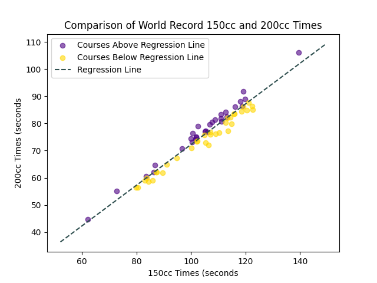

We're a team of budding data scientists excited to apply our newfound skills to everything Mario Kart.
We're a team of budding data scientists excited to apply our newfound skills to everything Mario Kart.
Welcome to the world where Luigi meets Logistic Regression, karts meet KMeans, and Koopa Troopas meet Pandas!

In Mariokart 8 Deluxe, players carefully choosing which character, kart, tires, and glider they use. These choices determine their stats, their acceleration, top speed, etc, while racing. We used KMeans clustering to group the courses based on the stats chosen by the world record holders for each respective course.

We explore exactly how much faster 200cc world record times are from their 150cc counterparts. We examine how optimal path through the course differs for different speeds.
